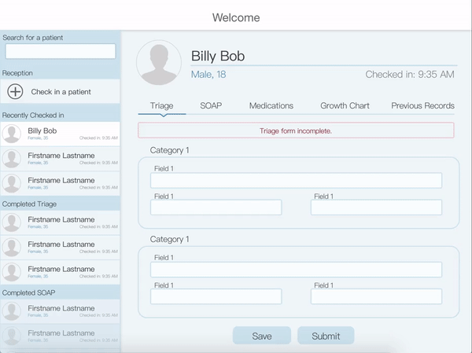
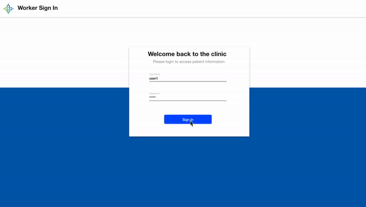

The Problem
Pen and Paper is Slow and Inefficient
Currently, the clinic writes everything down by paper and pen
due to lack of internet. However, this slows the process and
delays treating as many patients as possible. If the
clinic’s goal is to provide as many medical services as possible,
then we need to have a more effective system.
My Team's Role
Redesigning an Electronic Medical Record System
Our role was to enhance the overall flow of the clinic to help empower
student assistants and medical professionals. To speed up the clinical
process, our main objective was to understand the clinic's work and
how to best digitize this process. We wanted the clinic to treat more
patients as efficiently as possible, while ensuring a smooth
transition from paper to tablet.
With a cross collaboration with Triton Software Engineering (TSE) and
IHC, we decided to build a Electronic Medical Records (EMR) application
that is to be used on tablets at the clinic. Our main goal is to provide medical
services to people who have barriers to health in unprivileged communities.
My contributions in the project include wireframing and prototyping the
application, conducting usability tests on the app, and supporting front-end
development using React-Native.
Understanding Current Challenges
Learning Current Clinic Challenges & Assessing the Existing EMR App
Before we could dive into the redesign of the current EMR made by TSE,
we needed to get feedback from IHC clinic volunteers on the look and
feel of the existing application. We conducted five user interviews,
each an hour long. Through this process, we were able to identify the main pain points of
the EMR as well as what users most wanted to see.
Here were the people we interviewed:

Insights:
We learned about the unique workflow at each
clinic and were able to trace out a patient's entire journey from
check-in to receiving prescriptions.
We empathized with some issues with using paper documents:
- documentation is often illegible
- easy to lost files and heavy to transport,
- conversion errors (is a weight of 80 in kilograms or pounds?),
- difficulty in looking up patient histories.
We identified some pain points with the existing application:
- triage forms are too long and equally as inefficient to fill in
- ambiguity in what values to enter
- buttons are misleading, people didn't know which page to perform certain vital tasks
- certain features are unnecessary for different roles around the clinic
How Might We..?
Better Frame the Issue?
To solve these problems, my team and I started the design process by
asking these questions:
How might we create a meaningful solution that is robust but flexible?
How might we design an easy to use, intuitive, and straightforward
flow that will empower medical assistants and professionals?
How might we explore and uncover the opportunities that will enhance
the experience of the clinic?
Goals
Ensuring a better clinic experience
My team focused on creating a way for volunteers and medical
professionals to input and access a digitized version of the
patient's medical history, diagnoses, medications, treatment
plans, immunization dates, and more. We went on weekly design
sprints to finalize on one working prototype. Our goals included:
providing more accurate and legible documentation
granting speedy access to previous medical information to increase
opportunity for longitudinal care
preventing information from being lost
reducing complexity in the overall clinical process

First Iteration
An ideal patient profile experience
Without considering the existing application, we brainstormed ways
that would allow medical professionals at different areas of the
clinic to be able to use the same EMR app. This was my approach of
a patient profile that all volunteers at different parts of the
clinic could use.
I focused on minimizing the amount of screens
necessary, and ensuring that all users, ranging from receptioninsts to
doctors, would be able to use the application smoothly. The left
sidebar not only allows receptioninsts to check in patients, but
also lets medical professionals easily select patients and see the
overview of the clinic queue. The main page contains patient
profiles that enable fast submission of current
forms, as well as fast retrieval of previous records.

Final Prototype
After consolidating all the ideas from each member's wireframes,
we settled on one prototype. Some of the changes we made include:
Addition of a sign-in screen for an extra layer of security,
protecting patient privacy.
Providing four buttons from the home page to mimic the four
different clinic stations. Users at different stations would
be able to access important features and information that
pertains to them with ease.
Compiling an easily accessible patient history
based on all the previous forms filled out.
Easier forms to fill out with regularized formats and confirmation messages, using switches
to convert units to avoid confusion.
Automating many processes around the clinic, such as
lab requests, pharmacy requests, updating the medical inventory,
calculating and comparing patient BMI, etc.
We returned to IHC and conducted A/B testing of TSE’s old EMR and
our new high fidelity design. We interviewed four members and
received positive feedback for our prototype. We made appropriate
edits to our design, and began coding the application.

Future Plans
Future plans include continuous testing in the field and analyzing
the data to see in what aspects the application can show care
and be improved. My team and the users plan to stay in contact
so that the application can flow more efficiently through
the medical process. We plan on expanding on our idea of
digitizing the medical database to include more data with
easier access and more efficient dataflow.